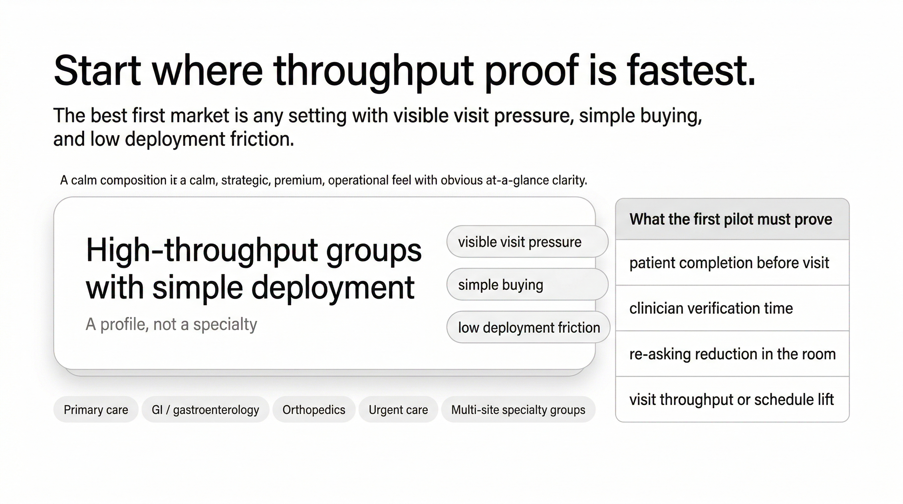
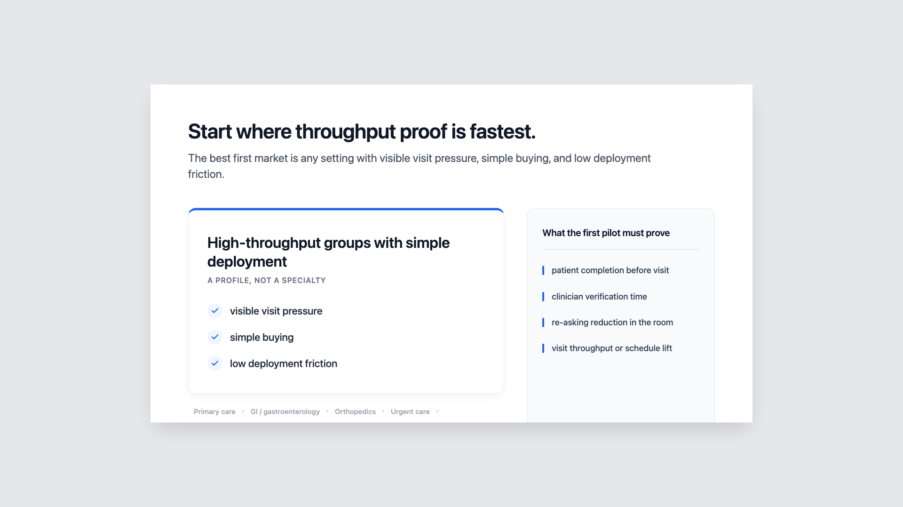

{kind=link}
{kind=link}
Executive Summary
_No assessment synthesis found._
_No assessment synthesis found._
_No next-pass plan found._
No Codex review summary found.
No Gemini review summary found.
No Anthropic review summary found.
No Codex repair summary found.
No Gemini repair summary found.
No Anthropic repair summary found.
_No repair synthesis found._
Convert product/category logic into business consequence.
**Recovered time matters when it becomes realized capacity.**
**If Vox produces even modest realized throughput gains, the economics can be meaningful enough to justify spend and pilot interest.**
This is the economics bridge. It should feel like operating leverage, not spreadsheet theater.
**Header** Recovered visit time creates real capacity.
**Subheader** When recovered minutes become completed visits, the impact is meaningful.
**Hero line** +1 visit / provider / day
**Hero value** $11,000 / year
**Secondary line** ~$917 / month break-even spend / provider
**Bottom line** Recovered time matters when it becomes completed visits.
A hero economics treatment with scenario support, not a dense ROI worksheet.
It focuses on one disciplined thought:
That is the right business consequence for this deck.
This slide is structurally in a good place. The main risk is tone: it can become either too spreadsheet-like or too soft. The current direction is strong if kept controlled.
**Strong and near locked conceptually.**
---
Show where to prove the value claim first.
**The right first market is the one where throughput proof is fastest.**
**The team has a disciplined and testable plan for where to prove Vox first, and the proof criteria are tightly linked to the product’s value claim.**
This is the beachhead / proof-design slide. It is not a TAM slide. It is not an eventual expansion slide. It is not “big market” theater.
**Header** Start where throughput proof is fastest.
Support idea:
A disciplined proof-path / beachhead selection treatment.
The essential logic should be:
This slide is in a good conceptual place. Its main risk is becoming generic market-selection language.
**Near locked.**
---
Compress execution trust.
**This team understands the visit deeply enough to build the right product and deploy it credibly.**
**These people seem specifically suited to build this company, not just impressive in general.**
This is not a résumé slide. It is an execution-risk reduction slide.
**Header** Built by people who understand the visit.
**Subheader** Clinical insight, product judgment, and deployment realism.
Founder grid with one risk-reduction line per founder.
The governing rule should be:
**[what this person understands or can do] → [which Vox execution risk it reduces]**
The structure is right. The slide is not finished because the actual founder lines matter a lot here. If those lines are generic, the slide weakens late.
**Structurally clear; pending final founder wording.**
---
Current working methodology for building Designer slide figures inside this repo.
This is the project-local source of truth for how we actually run the process. The imported manual at inputs/pitch_deck_figure_workflow_manual.md remains the upstream reference, but this file reflects the hardened process after real deck passes in this repo.
Use a repeatable loop that keeps strategy, figure decisions, model comparison, and review artifacts organized under one project root.
The goal is not just to make a figure. The goal is to preserve:
Current execution policy:
challenge branches
Gemini image + Gemini HTML
HTML/SVG/PNG artifact set
All active deck work should live under projects/designer-health/.
The key folders are:
deck-spec.jsonmaster-slide-specs.mdfigure-companion.mdslide-packets/figures/briefs/figures/ideation/figures/compositions/figures/render-briefs/figures/specs/prompts/slide-figures/Generated runtime artifacts may still land in output/, but stamped slide-review artifacts should resolve through the manifest-backed slide-figures/slide-XX/ tree.
Each stamped slide directory is manifest-backed. The root stays intentionally clean and keeps only the current selected figure projection plus version history:
manifest.jsonversions/slide-XX--version-YYYYYY.htmlslide-XX--version-YYYYYY.svgslide-XX--version-YYYYYY.pngslide-XX--version-YYYYYY.jpg or .webpThe current selected version is projected into the slide root for compatibility and fast browsing. Historical and draft candidates live under versions/version-*--<slug>/. Slide-level notes and change requests live under slide-notes/<slide-dir>/, and one-slide HTML reports live under slide-reports/<slide-dir>.html.
Use canonical stamped review directories inside the current selected version bundle:
gemini-review/anthropic-review/gemini-repair/anthropic-repair/When re-running a review or repair consult for the same current pass, overwrite the canonical directory instead of inventing a new suffixed folder name.
Every fully worked slide should have:
After a slide is stamped, later chats may enter a slide-local fine-tuning mode instead of replaying the full concept workflow.
Use this mode only when the requested change is polish-level and the current selected direction is still valid.
The handoff contract for that mode lives in:
projects/designer-health/slide-fine-tuning.mdIn fine-tuning mode:
version
slide-reports/<slide-dir>.html, and the stamped slide note in slide-notes/<slide-dir>/README.md
deck-spec.jsonmanifest.json inside paths.stampedDir to find the current selecteddeck-report.html, the stamped slide report ina contained HTML delta
versions/version-*--<slug>/gemini-html/generated.html branch forfigures/specs/*.json when the slide is spec-drivendraft is promoted
figure.* assets if theDo not reopen ideation, packet writing, or direction selection unless the requested change exposes a structural problem.
When a slide needs a new first draft from the locked Designer shell rather than polish on an existing HTML surface, use the create bootstrap instead of html:edit:run or gemini:html:tune.
The handoff contract for that mode lives in:
projects/designer-health/slide-creation.mdIn create mode:
templates/designer-deck-template-v1/template.html
under versions/version-*/create/
against the seeded shell
it with slide:versions promote
deck-spec.jsoncreate-draft version bundle under versions/slide-notes/<slide>/create-request.md plus a version-local snapshotslide:create:run to fan out the first-pass multimodal HTML searchdraft state until a human explicitly promotesLane policy in v1:
html: default first-draft pathhybrid: same HTML bootstrap plus extra reference images/filesnative: scaffold-only handoff to the existing native/spec workflowPull the current slide, the lead-in slide, and the next slide from deck-spec.json and sanity-check the human copy in master-slide-specs.md.
Lock the slide thesis, non-goals, figure job, and figure-specific copy.
Keep this short and execution-facing.
Start with figures:ideate against the checked-in brief. For essential slides or when the wrapper is brittle, also gather direct concept sets from GPT-5.4, Claude, and Gemini.
Do not leave the raw model artifact as the only record. The ideation note should make the distinct concept families obvious and name the current lead direction.
Compare materially different visual families and choose one.
Lock the chosen direction before native rendering.
Use it as the main taste / composition iteration lane.
Use it as the main editable / structural iteration lane.
Run html:screenshot on gemini-html/generated.html.
before broader review or repair. Use it for moves like spacing, position, visibility, size, or one contained structural tweak. Every micro-pass now has two checks:
gemini:html:tuneDo not use it for family changes, semantic rewrites, or broader layout redesigns. The micro-pass draft should live in slide-figures/slide-XX/versions/version-*--<slug>/.
OpenAI or Anthropic generation branches are no longer default per-slide requirements. Use them only for high-level ideas, challenge passes, or blocked Gemini cases.
Ask for:
Save those under the current selected version bundle.
Summarize:
Decide whether the current winner has only polish issues or still has a structural problem. If the issue is structural, reopen the loop and do a deliberate revision pass before promotion.
Ask Codex, Gemini, and Anthropic what to do next now that the failure class is known.
Classify the failure and state the exact next move before touching the next revision.
Native remains the canonical editable asset set: figure.html, figure.svg, and figure.png. Those artifacts stay inside the selected version bundle and are projected to the slide root as slide-XX--version-YYYYYY.html, .svg, and .png when the version is promoted.
If the pass changed the slide thesis, header, subheader, takeaway, figure role, family recommendation, numbering status, or current build status, update deck-spec.json, master-slide-specs.md, deck-matrix.md, and figure-companion.md in the same turn.
Write a clean HTML report into slide-reports/slide-XX.html so the whole pass is reviewable in one click.
direction is locked
delta before the pass goes back through broader review
break
until the regression gate runs again
Gemini lane is stable
defaults
Codex, Gemini, and Anthropic
understanding
gemini:html:tune is now the default micro-loop for one concrete Gemini HTMLgenerated.html invalidates prior micro-pass approvalAsk this after the first comparison pass:
now stale?
If the answer is yes to any of those, loop again.
If the answer is no and the remaining issues are polish only, promote.
For figure-essential slides, prefer at least one critique and one deliberate revision unless the first pass is already clearly stable.
Also run this visual sanity check before promotion:
visibly justified
ambiguous
xml
composition rather than a cropped fragment
Also ask:
noise?
first, or has it crossed into a broader layout / family / semantic problem?
gemini:html:tuneIf a branch is not meaningfully helping, archive it out of the primary comparison set.
Use this exact order:
Write a blunt local assessment based on the actual rendered image.
Use gemini:review with the stamped image and the checked-in critique prompt.
Use anthropic review with the same stamped image and prompt.
Write one checked-in synthesis note that captures:
The operator decision is not a vote count. It is a synthesis. But the point of the three-review set is to make weak self-approval much harder.
Unique blocker findings must be preserved even when only one reviewer catches them. Do not omit a concrete severe finding just because the other reviewers missed it.
When the slide does not clear the loop gate, classify the failure before revising:
Small spacing, sizing, or emphasis issues. Same concept, same family.
The right ingredients exist, but their arrangement or hierarchy is wrong.
The slide is readable but the figure is proving the wrong thing or duplicating meaning badly.
The chosen visual family is wrong for the slide job.
polishlayoutsemanticfamilyThen run a separate repair consultation.
This is not the same thing as the review prompt.
The review prompt asks:
The repair prompt asks:
Then choose the next move:
run gemini:html:tune first and only reopen the broader loop if that fails
do one targeted revision pass
write 2 to 3 concrete revision options in the composition note and choose one
update the slide packet before rendering again
stop iterating inside the same family and reopen composition
Do not jump straight from “broken” to “new render” without writing the next move down.
Do not synthesize the repair round loosely. Compare the three repair responses across the same four axes:
stay in the current family or reopen composition
targeted revision or broader redesign
Then apply this rule:
take the shared path and write it into next-pass.md
of the same move: take the majority path and note the dissent in repair-synthesis.md
do not render yet; reopen composition
update the slide packet before choosing a figure move
The operator decision is still a synthesis, not a vote count. But the synthesis must be traceable to those four axes.
projects/designer-health/figures/briefs/<brief>.md
projects/designer-health/figures/specs/<spec>.json
projects/designer-health/figures/specs/<spec>.json --project-root projects/designer-health --slide slide-XX --version-id version-000123 --no-images
projects/designer-health/prompts/<prompt>.txt --out projects/designer-health/slide-figures/slide-XX/versions/version-*--<slug>/gemini-image
projects/designer-health/prompts/<prompt>.txt --out projects/designer-health/slide-figures/slide-XX/versions/version-*--<slug>/gemini-html
projects/designer-health/slide-figures/slide-XX/versions/version-*--<slug>/gemini-html/generated.html --output projects/designer-health/slide-figures/slide-XX/versions/version-*--<slug>/gemini-html/preview.png
projects/designer-health/slide-figures/slide-XX/versions/version-*--<slug>/gemini-html --change-file projects/designer-health/slide-notes/slide-XX/fine-tune-request.md --codex-review-file projects/designer-health/slide-figures/slide-XX/versions/version-*--<slug>/gemini-html/tune/<run-id>/<attempt>/codex-micro-review.md
--slide slide-XX
requires the checked-in codex-repair.md as the Codex / GPT-5.4 input and writes repair-synthesis.generated.md as a scaffold
npm run figures:ideate -- --briefnpm run figures:render -- --specnpm run figures:export -- --specnpm run slide:versions -- createnpm run slide:versions -- promotenpm run slide:versions -- migratenpm run gemini:image -- --prompt-filenpm run gemini:html -- --prompt-filenpm run html:screenshot -- --inputnpm run gemini:html:tune -- --dirnpm run figures:report -- --project-root projects/designer-health --slide slide-XXnpm run figures:repair-loop -- --project-root projects/designer-healthloop gate says the remaining issues are polish-level
considering the pass complete
and the relevant tooling docs before moving on
versions/version-* bundle is better than copying later
no outer frame, no browser-like margins, full-slide scale
defer it just to keep the first pass cleaner; that should trigger a reopened loop, not a promotion
follows slide 10 and precedes slide 12
The right beachhead is any care setting where Vox can prove real clinical throughput quickly because visit pressure is visible, buying is simple, and deployment friction is low.
10 says throughput gains matter economically11 says where to prove those gains first in the market12 then asks whether the team is credible enough to execute that planSo this slide is the bridge from economics to go-to-market discipline.
the best first market is not one specialty but a repeatable operating profile: settings where throughput pain is visible, buying is concentrated, and proof shows up quickly in live clinical operations
the choice should feel like a practical deployment decision, not a category or market-size abstraction
fails
workflow startup
60 to 90 days
High-throughput groups with simple deploymentStart where throughput proof is fastest.
The best first market is any setting with visible visit pressure, simple buying, and low deployment friction.
High-throughput groups with simple deployment
A profile, not a specialty
What the first pilot must prove
Pick the profile where proof happens fastest.
Primary careGI / gastroenterologyOrthopedicsUrgent careMulti-site specialty groupsthroughput pain is visible in every clinic daybuying and rollout are concentratedpilot outcomes are measurable fastpatient completion before visitclinician verification timere-asking reduction in the roomvisit throughput or schedule liftThis is the lead direction. It keeps the market choice explicit without pretending the wedge is locked to a single specialty.
beachhead profile hero plus pilot proof scorecard
shape-not-specialty field
point explicit
qualifying-conditions strip
specialty as the whole wedge
vague market attractiveness
beachhead profile hero plus proof scorecard
varying how explicit or premium the beachhead-profile moment feels
the thesis itself
deck-spec.json
deck-report.html
inputs/vox_deck_slide_specs_clean_pack.md inputs/vox-full-slide-map-copy.md
Header:
Start where throughput proof is fastest.Subheader:
buying, and low deployment friction.
The best first market is any setting with visible visit pressure, simpleScope:
the visual job is the beachhead definition object, not text chrome.
Must-keep logic:
A profile, not a specialty
What the first pilot must prove
High-throughput groups with simple deploymentvisible visit pressuresimple buyinglow deployment frictionPrimary careGI / gastroenterologyOrthopedicsUrgent careMulti-site specialty groupspatient completion before visitclinician verification timere-asking reduction in the roomvisit throughput or schedule liftDesired effect:
Helpful directions:
profile first, qualifying conditions second, proof panel third
Avoid:
Slide 11 is the beachhead-definition slide.
10 says the product creates real throughput value11 says where Vox should prove that value first12 then says why the team can execute the planSo this slide should not read as market sizing or specialty selection. It should read as a disciplined first-market definition: pick the settings where proof happens fastest.
The packet's core family is right:
The main design risk is not a missing idea. It is slipping back into consulting syntax: funnel, filters, scorecards, or specialty taxonomy.
High-throughput groups with simple deployment
Why it works:
Main risk:
market map
A profile, not a specialty
Why it works:
Main risk:
visible visit pressure simple buying low deployment friction
Why it works:
Main risk:
The packet already made the strategic correction: the wedge is not primary care. The model pass should stress-test only the expression.
The provider-backed figures:ideate wrapper was attempted first, but it failed because the Claude response was not strict JSON. Direct Claude ideation and Gemini concept generation were still collected and used for synthesis.
What is useful from that:
original card-led direction
example settings should probably live as a quiet footer group, not as satellites, because satellites make the slide read like specialty selection
the examples appear
First Gemini image pass for the profile-hero concept landed.
What is useful from that:
proof panel
execution branch before promotion
The slide should not ask:
It should ask:
That means the hero object must be a profile, not a named setting. Example settings are valid only if they visibly behave like evidence, not like the answer itself.
Lead concept for the next render/composition pass:
than orbiting satellites
This is the clearest way to preserve both halves of the message:
conditions first, then profile statement, then proof panel, then example settings
card
slug: slide-11-proof-column-v1slide: 11deck: designer-healthstatus: challenge-directionslug: slide-11-proof-column-v1slide: 11deck: designer-healthstatus: ready-for-geminiprofile statement second, proof panel third, examples last.
A profile, not a specialty
What the first pilot must prove
